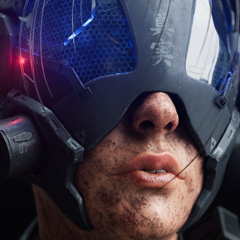
Joe Solo
Game Developer · Principal Character Artist
Summary
I’m a game developer and character artist with 20 years in the industry and 12 shipped titles, including FireFall, Call of Duty: Advanced Warfare, Killzone 3, NBA 2K and Vampire: The Masquerade – Bloodlines 2. I’m a gamer first and a developer second. I trained in drawing and painting at Watts Atelier, and those fundamentals are behind everything I make. Along the way I’ve led character teams, directed concept artists, built character pipelines and helped shape story and design. Now I’m indie: building my own game, making my own tools, and sharing what I learn along the way.
FireFall developer · Red 5 Studios · 2011 – 2015
I helped build FireFall.
I shipped the Arsenal battleframe and had a hand in every battleframe and backpack in the game. Now I’m building a game of my own, and bringing some of that old Red 5 magic with me.
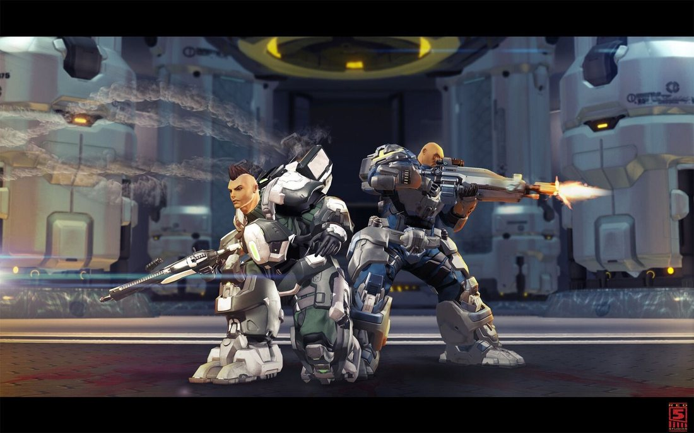
FireFall marketing art · Red 5 Studios. The battleframe on the left is mine.
- The Arsenal. The game’s first major body type upgrade, and one of its most popular frames.
- Every frame, every backpack. I built assets from scratch, fixed existing work and oversaw the outsourced art, across characters, weapons and props.
- Design, not just art. I co-designed and modeled the character creator and upgrade room, battleframe interiors included, and designed the back views that single-angle concept art didn’t show.
- A voice in the game. I contributed to story and design with every department, and was part of the push for interiors and a campaign with missions.
FireFall cinematic trailer · Red 5 Studios
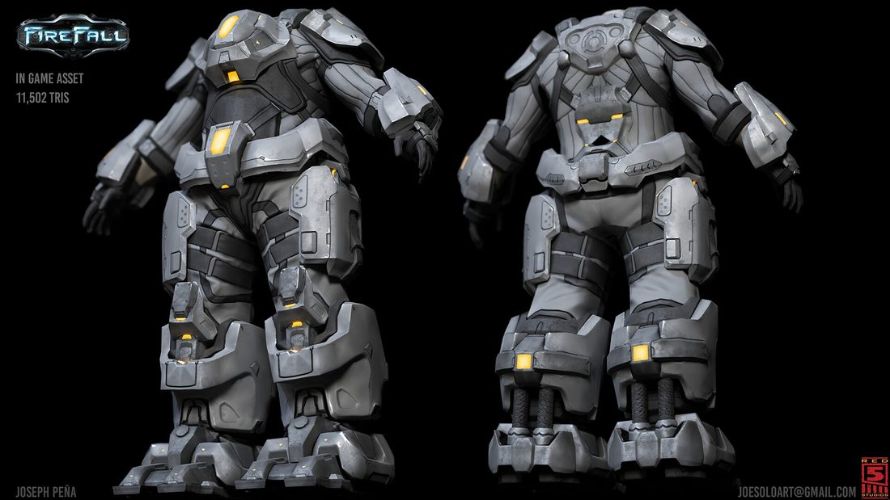
Arsenal battleframe


Arsenal battleframe · 10 images
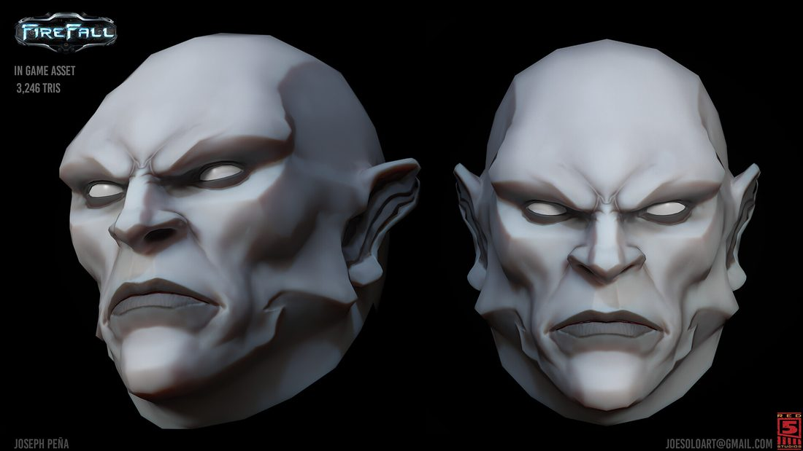
Chosen head


Chosen head · 5 images
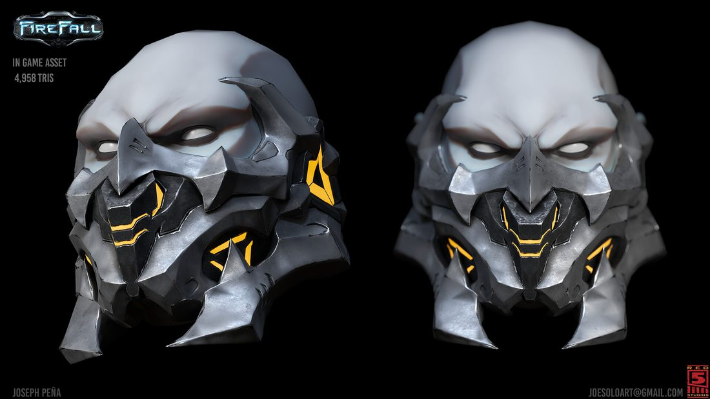
Chosen mask


Chosen mask · a popular mask · 5 images
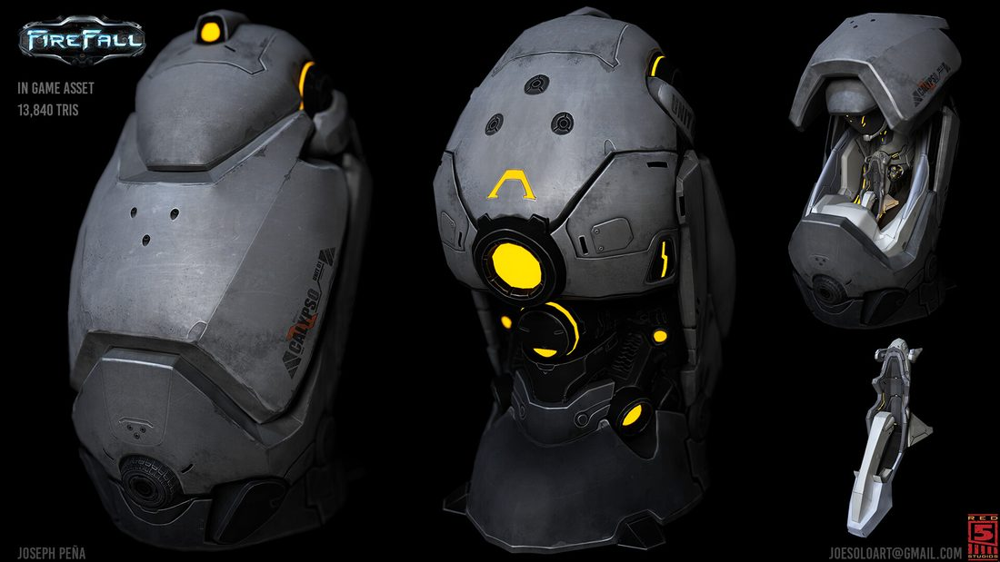
Starchamber


Starchamber · 9 images
I’m building my own game now. Follow along.
- NBA 2K23, 24, 25
- The Walking Dead: Saints & Sinners – Chapter 2
- Killzone 3
- Behemoth
- Vampire: The Masquerade – Bloodlines 2
- Resistance 3
- Call of Duty: Advanced Warfare
- FireFall
- Sony Home
- Guilty Party
Skills
- Art Direction
- Concept Art
- Illustration
- Character Modeling
- Digital Sculpting
- Game Design
- Character Design
- Drawing
- Product Design
- Visual Development
- Leadership
- Training
- Highly Organized
- Realtime Hair
- Artist Coaching
- Talent Development
Personal work
Click any piece to see it at full size.


Production work
Character assets shipped on commercial titles.

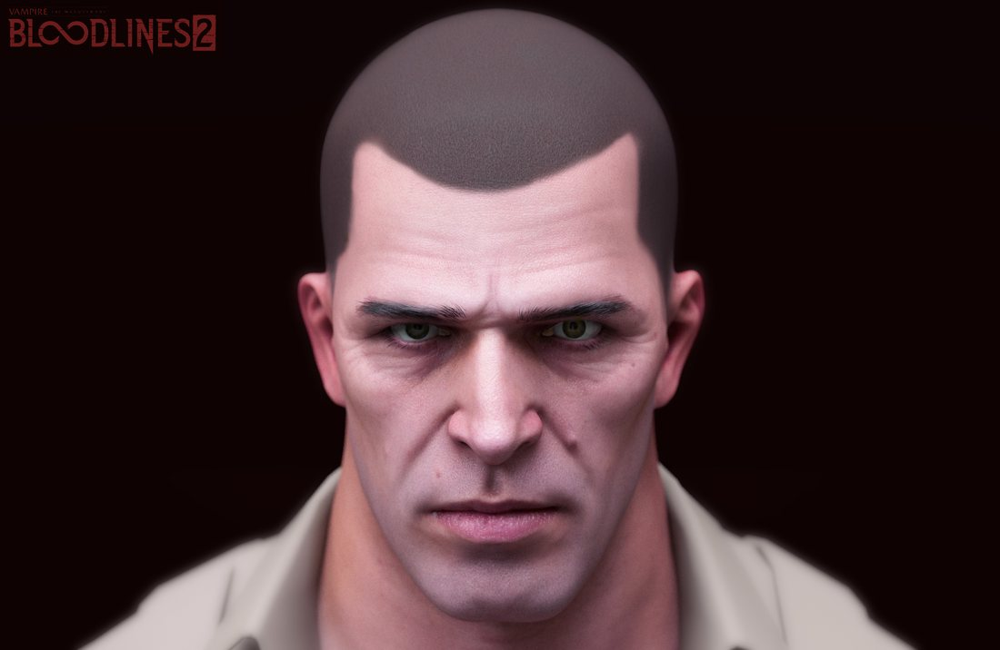
GunnarGunnar · Vampire: The Masquerade – Bloodlines 2, Hardsuit Labs

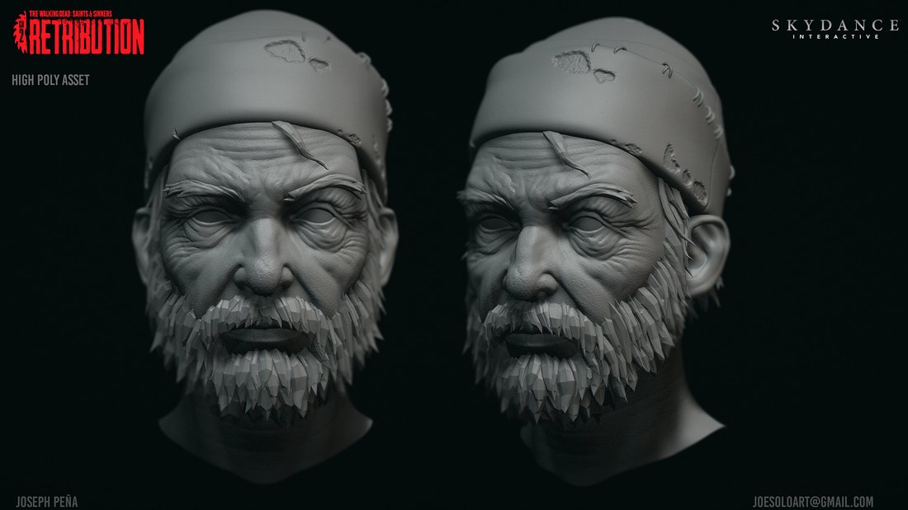
HenriHenri · The Walking Dead: Saints & Sinners – Retribution, Skydance Interactive

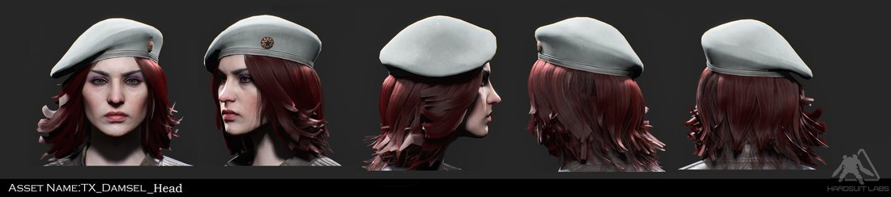
DamselDamsel · Vampire: The Masquerade – Bloodlines 2, Hardsuit Labs

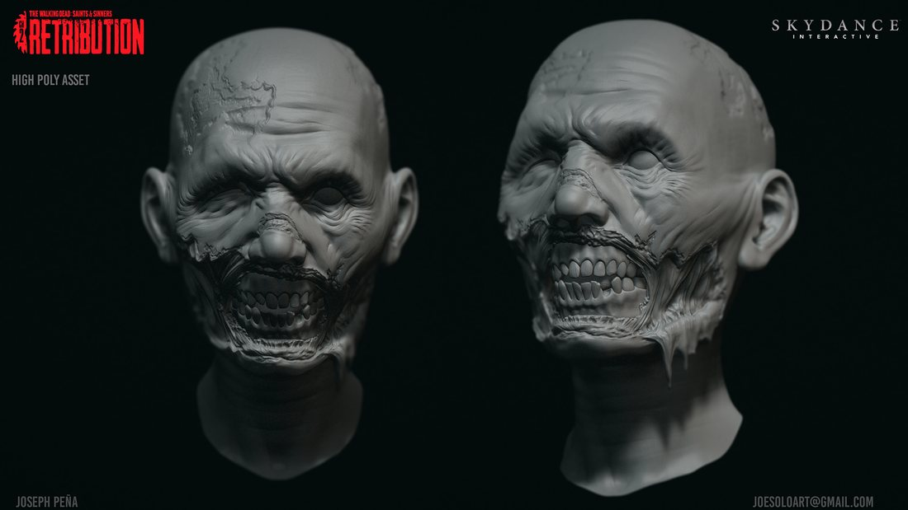
WalkerWalker · The Walking Dead: Saints & Sinners – Retribution, Skydance Interactive

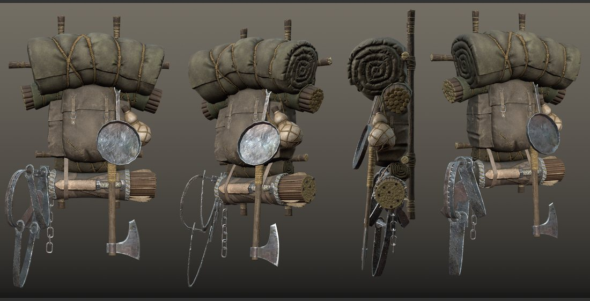
BackpackBackpack · prop, four views
Software
- 3ds Max
- Maya
- Photoshop
- Substance 3D Painter
- Marmoset Toolbag
- Unreal Engine
- ZBrush
- Marvelous Designer
- Arnold
- Krita
Experience
Principal Artist & Independent Contractor
Independent Game Developer · Freelance
Apr 2008 – Present18 yrs 6 mos
- April 2026 – ongoing contract Principal Artist for an unannounced studio.
- Leading and producing art for independent and AAA development teams.
- Spearheaded the development of original IP, defining gameplay systems, visual direction, narrative tone, and world-building — acting as creative, design, production, and narrative lead.
- Employed management software such as Jira and Confluence to coordinate individual contributors, tasks, milestones, and creative decisions, as well as electing clear delivery estimates and deadlines.
- Contributed hands-on production work, including concept art, character creation, environment art, narrative, and gameplay assets, as well as visual reference used to guide style and asset development.
- Supported clients such as Technicolor Interactive, THQ, and MGM with 3D character, creature, prop, and environment asset development.
Senior Character Artist
Visual Concepts · Full-time
Mar 2023 – Mar 20241 yr 1 moAustin, Texas
Shipped NBA2K 23, 24 and 25- Created, edited, optimized, and shipped over 1000 main character game assets over three cycles of the NBA 2K franchise.
- Supported over 8 seasons of game updates and iterations by authoring new and existing NBA and WNBA player characters, as well as player-costume skins.
- Enhanced player experience by designing original concept art and 3D modeling an additional 18 player costume skins and items that became unlockable for game players.
- Fixed low-quality environment game assets such as open world city character statues by re-modeling, re-texturing, and improving the overall visual fidelity.
- Maintained the integrity of the game production schedule by reviewing outsource work, providing actionable feedback, and making hands-on fixes in a timely manner.
Skydance Interactive
Feb 2021 – Mar 20232 yrs 2 mosCalifornia
Shipped The Walking Dead: Saints & Sinners — Chapter 2 and BehemothCharacter Artist · Full-time
May 2022 – Mar 202311 mosSanta Monica, California
- Strengthened gameplay variety and narrative immersion by creating six fully realized non-playable characters, delivering digital sculpts, textures, optimized game-ready meshes, and production-ready skinning for in-engine use.
- Elevated combat encounters and player challenge curves by authoring a boss enemy, designed and built from sculpt through final skinned asset.
- Supported enemy ecosystem balance and encounter pacing by producing 3 zombie enemy characters, optimized for reuse, performance efficiency, and clear silhouette recognition during gameplay.
- Improved first-person gameplay fidelity and player embodiment by creating a complete set of first-person arms, optimized for close-camera viewing, deformation quality, and animation compatibility.
- Enhanced combat feedback and player engagement by developing a hero weapon asset with optimized real-time geometry.
- Maintained production quality and performance standards by re-meshing and optimizing 6 outsourced weapon assets, reducing polycount, re-projecting textures, rebuilding base materials, and ensuring consistency with internal visual and technical benchmarks.
Character Artist · Contract
Feb 2021 – Mar 20232 yrs 2 mosLos Angeles, California
Lead Character Artist
Hardsuit Labs · Full-time
Jan 2017 – Jan 20214 yrs 1 moSeattle, Washington
Shipped Vampire: The Masquerade – Bloodlines 2- Defined the visual and technical foundation for over 350 shipped characters in Unreal Engine by creating male and female main player base bodies, optimized for customization, animation reuse, and long-term content scalability.
- Expanded character variety by authoring over 10 hair assets, built for reuse across multiple character types and optimized for real-time rendering.
- Accelerated realism and production by head-scanning over 50 subjects using a single high-end camera setup and converting raw scan data into usable, game-ready characters.
- Rapidly populated the game world by kitbashing over 100 non-playable characters from modular clothing systems.
- Provided art direction to concept artists for over 25 NPCs and enemies, aligning designs with technical constraints and gameplay needs.
- Scaled character production efficiently by establishing, maintaining, and documenting a robust end-to-end character pipeline spanning concept, base mesh creation, blockout, digital sculpting, clothing and hair authoring, retopology, texture painting, skinning, and in-engine integration.
- Led internal and external outsource character teams simultaneously while maintaining quality and meeting all deadlines.
Senior Character Artist
Virtually Live · Full-time
Nov 2016 – Mar 20175 mos
- Delivered licensed, likeness-critical character assets under aggressive production timelines by creating, editing, and optimizing 30+ complete professional soccer player characters from the United Arab Emirates national team using a single photographic reference per player, meeting strict visual accuracy requirements tied to licensing agreements.
- Supported large-scale crowd rendering and performance targets by authoring modular kitbash assets for stadium NPC crowds, including LODs, multiple outfit variants, and multiple texture sets optimized for real-time VR performance.
- Established a scalable character production pipeline by creating reusable head, body, and modular costume base meshes, enabling efficient asset creation across both player characters and stadium NPCs.
- Ensured production consistency and team alignment by creating and maintaining clear character art documentation, covering modeling, texturing, optimization, and integration workflows.
- Partnered closely with the Art Director to define and uphold character quality standards, align visual goals with technical constraints, and set achievable production targets throughout development.
Red 5 Studios
Jul 2011 – Nov 2015Orange County, California
Shipped FireFallSenior Character Artist / Senior Modeler · Full-time
Jul 2015 – Nov 20155 mos
Modeler · Full-time
Jul 2011 – Sep 20132 yrs 3 mos
- Shipped the Arsenal battleframe from concept to release in about six weeks, entirely in house. It was one of the most popular frames in the game.
- Fitted the new, large-proportioned Arsenal character to a rig built for a smaller stature: the game’s first major body type upgrade.
- Worked on every battleframe and backpack in the game, creating assets from scratch, fixing existing work, and overseeing outsourced art.
- Developed over 500 main character and gameplay-related assets during active production phases.
- Responsible for hard-surface armor sets, organic character components (heads, bodies, clothing, creatures), first- and third-person weapons, and hero props, supporting both gameplay and narrative needs.
- Supported a highly-stylized visual direction by translating concept art into expressive, readable in-game assets.
- Designed most of the back views for many models, filling in what single-angle concept art did not show.
- Co-designed and modeled the character creator and upgrade room, including battleframe interiors.
- Planned and implemented a shared character head system, reorganizing and standardizing all in-game heads to conform to a unified base mesh, improving animation compatibility, customization flexibility, and pipeline efficiency.
- Maintained production schedule integrity by reviewing outsourced character work, providing clear, actionable feedback, and making hands-on fixes to ensure assets met quality and delivery requirements.
- Also worked as weapons artist and prop artist, and served multiple times as Scrum Master in an Agile/Scrum environment, helping the team stay organized, remove blockers, and meet production milestones.
- Contributed to story and design, working closely with every department, and was part of the push for interiors and a campaign with missions.